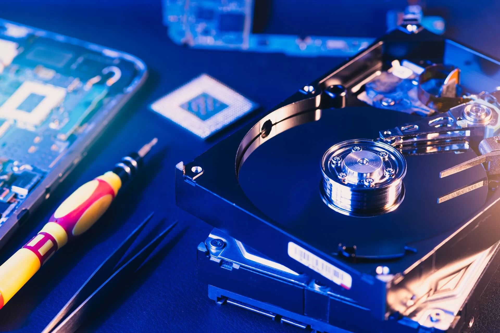

Serviços de Informática
Oferecemos uma ampla gama de serviços de informática para atender às suas necessidades:
-
Manutenção de computadores
Computadores, Notebooks, Celulares etc...
-
Instalação de software

Pacote Office, Sistemas Operacionais, Jogos e Muito mais.
-
Recuperação de dados
Dados de pendrive e Cartão de Memoria.
-
Suporte técnico remoto
Suporte técnico remoto para resolver problemas sem sair de casa.
-
Consultoria em TI

Consultoria especializada para otimizar seu ambiente de TI.
Para mais informações, entre em contato conosco!